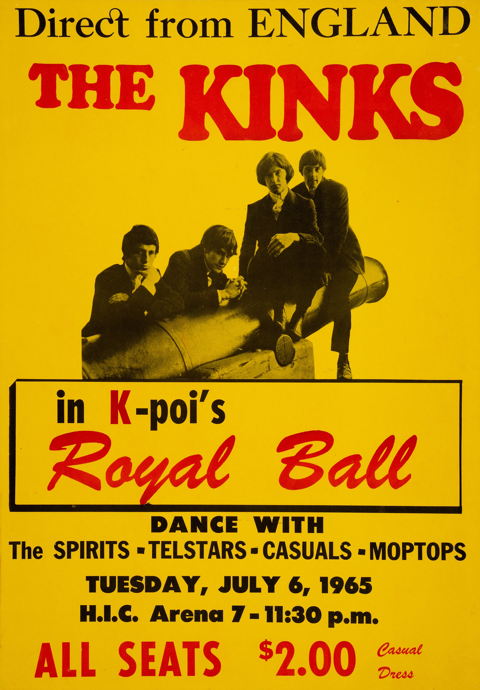

Kinks Sunny Afternoon sounds like the most relaxed record of 1966.
Ray Davies wrote it while recovering from a genuine collapse.
The gap between how the song feels and how it was written is the real story.

Table of Contents
- Written While Recovering From a Breakdown
- A Satire of Britain's Super-Rich Tax Bracket
- Knocking The Beatles Off Number One
- FAQ
Kinks Sunny Afternoon: Written While Recovering From a Breakdown
In March 1966, midway through a European tour, Ray Davies collapsed onstage from nervous exhaustion.
Touring, management pressure, and the pace of the band's schedule had worn him down completely.
The band had also just come off a bruising run of lineup tension and money disputes with their management team.
"People Call It Nervous Exhaustion"
Davies later described writing the song during that same period of illness.
He said people called it nervous exhaustion, though to him it felt like something heavier than that phrase suggests.
The song's loose, sun-drenched feel came directly out of that recovery.
A Satire of Britain's Super-Rich Tax Bracket
The lyrics are sung from the perspective of a wealthy man losing his fortune to taxes.
He complains that he can no longer afford to sail his yacht.
Aimed at Harold Wilson's Tax Policy
Davies wrote the song as a direct response to Britain's steep progressive income tax under Prime Minister Harold Wilson's government.
Rather than complain in his own voice, he put the grievance in the mouth of an out-of-touch aristocrat.
That satirical distance is what kept the song funny instead of bitter.
The track later appeared on the band's 1966 album Face to Face, recorded during the same stretch of illness and industry pressure.
Its loping, music-hall arrangement stood in sharp contrast to the harder singles that had made the band famous two years earlier.
Knocking The Beatles Off Number One
The Kinks recorded the song at Pye Studios on May 13, 1966, again with producer Shel Talmy.
It was released as a single the following month.
"Sunny Afternoon" reached number one on the UK charts that summer.
It replaced The Beatles' "Paperback Writer," which had held the top spot for only a week.
Davies later called that particular chart swap one of the great joys of his career, given how rarely The Kinks got the upper hand over their biggest rivals.
In the US, the song peaked at a more modest number 14 on the Billboard Hot 100 that autumn.
FAQ
Who wrote it?
Ray Davies wrote it alone.
The Kinks recorded it at Pye Studios on May 13, 1966, with producer Shel Talmy.
What is the song actually about?
It satirizes Britain's high progressive tax rates under Harold Wilson's government.
It's sung from the viewpoint of a wealthy man complaining he can no longer afford his yacht.
Did Ray Davies really write it during a breakdown?
Yes.
He collapsed onstage from nervous exhaustion in March 1966 and wrote the song during his recovery.
How did it perform on the charts?
It reached number one in the UK that summer, replacing The Beatles' "Paperback Writer."
It peaked at number 14 on the US Billboard Hot 100.
This single shows a different side of The Kinks than their early power-chord singles.
It's part of the wry, observational songwriting that set the band apart within the wider British Invasion & Beat Music scene.
Back to the 1960smusic.net homepage to explore the rest of the decade, starting here with Kinks Sunny Afternoon.